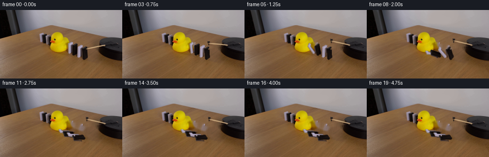
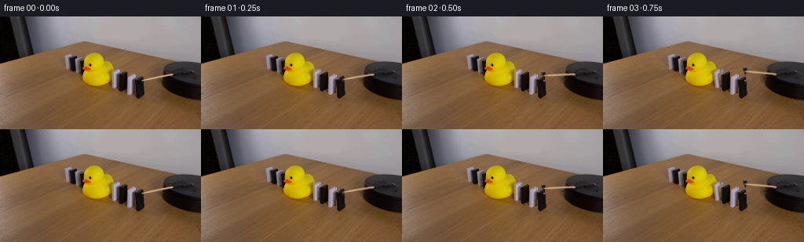

← 本轮 smoke 总览traex/DeepSeek-V4.1-Flash · 0057
text · 256×144 · 4.0 FPS · 20 帧 · 状态 complete · 输出 tokens 50126
原始任务Static locked-off single-shot with fixed frame throughout filmed with constant framerate in real-time. The scene shows a realistic scientific demonstration. The scene only contains the described setup and actions. A yellow rubber duck has been positioned in the middle of a line of black and white dominoes on a wooden table. The wooden stick attached to the black platform rotates clockwise and knocks the first domino block.
当前保存结果
已保存候选与代码修改
这里按时间展示外部捕获的候选，每份均可单独播放。保存新版本不等于完成视觉检查；下方工具证据记录实际看过的图。
候选 01 · 2026-11-09T02:00:29.059709+00:00 · 点开播放与检查图
inspection.png

transition_check.png

代码变化
--- 上一保存版本
+++ 本次保存版本
@@ -0,0 +1,216 @@
+from pathlib import Path
+
+import cv2
+import numpy as np
+from PIL import Image
+
+import artifact_io
+
+
+WIDTH = 256
+HEIGHT = 144
+FRAMES = 20
+
+
+def _component_mask(mask, x0, y0, x1, y1):
+ """Return the largest component inside a hand-located object window."""
+ roi = np.zeros_like(mask, dtype=np.uint8)
+ roi[y0:y1, x0:x1] = mask[y0:y1, x0:x1]
+ count, labels, stats, _ = cv2.connectedComponentsWithStats(roi, 8)
+ if count <= 1:
+ return roi.astype(bool)
+ largest = 1 + int(np.argmax(stats[1:, cv2.CC_STAT_AREA]))
+ return labels == largest
+
+
+def _extract_sprite(frame, mask):
+ ys, xs = np.where(mask)
+ x0, x1 = int(xs.min()), int(xs.max()) + 1
+ y0, y1 = int(ys.min()), int(ys.max()) + 1
+
+ # Keep one source pixel around the tile so its anti-aliased edge is retained.
+ pad = 1
+ x0, y0 = max(0, x0 - pad), max(0, y0 - pad)
+ x1, y1 = min(WIDTH, x1 + pad), min(HEIGHT, y1 + pad)
+
+ patch = frame[y0:y1, x0:x1].copy()
+ core = mask[y0:y1, x0:x1].astype(np.uint8)
+ alpha = cv2.GaussianBlur(core.astype(np.float32), (3, 3), 0.55)
+ alpha = np.maximum(alpha, core.astype(np.float32) * 0.94)
+ alpha = np.clip((alpha - 0.08) / 0.92, 0.0, 1.0)
+ return patch, alpha, (x0, y0)
+
+
+def _make_clean_plate(frame):
+ """Remove the movable pieces while preserving the duck, platform, and table."""
+ rgb = frame.astype(np.uint8)
+ r, g, b = rgb.transpose(2, 0, 1).astype(np.int16)
+ value = rgb.max(axis=2)
+ chroma = rgb.max(axis=2).astype(np.int16) - rgb.min(axis=2).astype(np.int16)
+
+ white = (value > 108) & (chroma < 30)
+ dark = value < 66
+
+ movable = np.zeros((HEIGHT, WIDTH), dtype=np.uint8)
+
+ white_tiles = [
+ _component_mask(white, 140, 64, 151, 94),
+ _component_mask(white, 159, 70, 171, 102),
+ ]
+ dark_tiles = [
+ _component_mask(dark, 147, 67, 164, 99),
+ _component_mask(dark, 167, 74, 187, 107),
+ ]
+ for tile in white_tiles + dark_tiles:
+ movable[tile] = 255
+
+ # The wooden trigger arm lies over the table and the left lip of the platform.
+ stick_polygon = np.array(
+ [[177, 78], [219, 70], [223, 75], [182, 85]], dtype=np.int32
+ )
+ cv2.fillConvexPoly(movable, stick_polygon, 255)
+
+ # Include the small contact shadows directly beneath the domino bases.
+ movable[92:107, 140:187] = np.maximum(
+ movable[92:107, 140:187],
+ ((rgb[92:107, 140:187].max(axis=2) < 90)).astype(np.uint8) * 255,
+ )
+ movable = cv2.dilate(movable, np.ones((3, 3), np.uint8), iterations=1)
+
+ plate = cv2.inpaint(rgb, movable, 4, cv2.INPAINT_TELEA)
+
+ # Restore a little fine wood variation in the broad inpainted patch. The
+ # field is deterministic and stays below the visible grain contrast.
+ yy, xx = np.mgrid[0:HEIGHT, 0:WIDTH]
+ patch = movable.astype(bool)
+ grain = (
+ 1.3 * np.sin(xx * 0.61 + yy * 0.09)
+ + 0.8 * np.sin(xx * 1.43 - yy * 0.31)
+ + 0.6 * np.sin(xx * 0.19 + yy * 1.17)
+ )
+ for channel in range(3):
+ plate[:, :, channel] = np.clip(
+ plate[:, :, channel].astype(np.float32) + patch * grain,
+ 0,
+ 255,
+ ).astype(np.uint8)
+
+ # Frame zero is the source of truth, so the plate only needs to be credible
+ # where an object uncovers it in later frames.
+ return plate
+
+
+def _composite_sprite(canvas, patch, alpha, origin, pivot, angle_deg):
+ h, w = patch.shape[:2]
+ px, py = origin
+ cx, cy = pivot
+
+ matrix = cv2.getRotationMatrix2D((cx - px, cy - py), angle_deg, 1.0)
+ matrix[0, 2] += px
+ matrix[1, 2] += py
+
+ warped = cv2.warpAffine(
+ patch,
+ matrix,
+ (WIDTH, HEIGHT),
+ flags=cv2.INTER_LINEAR,
+ borderMode=cv2.BORDER_CONSTANT,
+ borderValue=(0, 0, 0),
+ )
+ warped_alpha = cv2.warpAffine(
+ alpha,
+ matrix,
+ (WIDTH, HEIGHT),
+ flags=cv2.INTER_LINEAR,
+ borderMode=cv2.BORDER_CONSTANT,
+ borderValue=0,
+ )[..., None]
+
+ canvas[:] = (
+ warped.astype(np.float32) * warped_alpha
+ + canvas.astype(np.float32) * (1.0 - warped_alpha)
+ ).round().clip(0, 255).astype(np.uint8)
+
+
+def _ease_in(u):
+ u = float(np.clip(u, 0.0, 1.0))
+ return u ** 1.55
+
+
+def _fall_angle(frame_index, start_frame, duration):
+ return 88.0 * _ease_in((frame_index - start_frame) / duration)
+
+
+def generate():
+ source = np.asarray(Image.open("first_frame.png").convert("RGB"))
+ assert source.shape == (HEIGHT, WIDTH, 3)
+
+ plate = _make_clean_plate(source)
+
+ rgb = source.astype(np.int16)
+ value = source.max(axis=2)
+ chroma = rgb.max(axis=2) - rgb.min(axis=2)
+ white = (value > 108) & (chroma < 30)
+ dark = value < 66
+
+ tile_specs = [
+ # Left to right: alternating white and black dominoes.
+ (white, (140, 64, 151, 94), (146.0, 90.5), 5.4),
+ (dark, (147, 67, 164, 99), (156.0, 95.5), 5.0),
+ (white, (159, 70, 171, 102), (165.0, 98.5), 4.7),
+ (dark, (167, 74, 187, 107), (177.0, 103.0), 4.4),
+ ]
+ tiles = []
+ for mask_kind, window, pivot, duration in tile_specs:
+ mask = _component_mask(mask_kind, *window)
+ patch, alpha, origin = _extract_sprite(source, mask)
+ tiles.append((patch, alpha, origin, pivot, duration))
+
+ stick_polygon = np.array(
+ [[177, 78], [219, 70], [223, 75], [182, 85]], dtype=np.int32
+ )
+ stick_mask = np.zeros((HEIGHT, WIDTH), dtype=np.uint8)
+ cv2.fillConvexPoly(stick_mask, stick_polygon, 255)
+ stick_mask = stick_mask.astype(bool)
+ stick_patch, stick_alpha, stick_origin = _extract_sprite(source, stick_mask)
+ stick_pivot = (220.0, 75.0)
+
+ start_frames = [2.0, 3.6, 5.1, 6.6]
+ stick_angles = [-2.0, -9.0, -17.0, -22.0, -24.0, -25.0]
+
+ frames = np.empty((FRAMES, HEIGHT, WIDTH, 3), dtype=np.uint8)
+ for index in range(FRAMES):
+ if index == 0:
+ frames[index] = source
+ continue
+
+ canvas = plate.copy()
+
+ # Back-to-front order keeps the nearer, right-hand dominoes in front
+ # as they tip into the line.
+ for tile_index in (0, 1, 2, 3):
+ patch, alpha, origin, pivot, duration = tiles[tile_index]
+ angle = _fall_angle(index, start_frames[tile_index], duration)
+ _composite_sprite(canvas, patch, alpha, origin, pivot, angle)
+
+ stick_angle = stick_angles[min(index - 1, len(stick_angles) - 1)]
+ _composite_sprite(
+ canvas,
+ stick_patch,
+ stick_alpha,
+ stick_origin,
+ stick_pivot,
+ stick_angle,
+ )
+ frames[index] = canvas
+
+ # A restrained final settle keeps the last second alive without implying
+ # another unseen action after the cascade.
+ for index in range(14, FRAMES):
+ frames[index] = frames[13]
+
+ artifact_io.save(frames, Path(__file__).resolve().parent)
+
+
+if __name__ == "__main__":
+ generate()
可观测工具行为
命令 1 · 2026-11-09T01:53:55.954688+00:00/bin/bash -c "pwd && rg --files -g '"'!*__pycache__*'"' | sort"
exit 0 命令 2 · 2026-11-09T01:53:56.089671+00:00/bin/bash -c "sed -n '1,240p' GENERATION_RULES.md"
exit 0 命令 3 · 2026-11-09T01:53:56.439949+00:00/bin/bash -c "sed -n '1,240p' prompt.txt"
exit 0 命令 4 · 2026-11-09T01:53:56.643352+00:00/bin/bash -c "file first_frame.png && identify -verbose first_frame.png 2>/dev/null | sed -n '1,80p'"
exit 127 命令 5 · 2026-11-09T01:54:03.179590+00:00/bin/bash -c "sed -n '1,260p' artifact_io.py"
exit 0 命令 6 · 2026-11-09T01:54:03.688085+00:00/bin/bash -c "python - <<'PY'
import importlib.util
for m in ['PIL','numpy','cv2','scipy','imageio','matplotlib']:
print(m, bool(importlib.util.find_spec(m)))
PY"
exit 0 命令 7 · 2026-11-09T01:54:03.875099+00:00/bin/bash -c "python - <<'PY'
from PIL import Image
import numpy as np
im=Image.open('first_frame.png')
print(im.mode, im.size, im.getextrema())
a=np.asarray(im.convert('RGB'))
print('shape',a.shape,'mean',a.mean((0,1)),'std',a.std((0,1)))
# unique colors and frequent
u,c=np.unique(a.reshape(-1,3),axis=0,return_counts=True)
idx=np.argsort(c)[-30:][::-1]
print('unique',len(u))
for i in idx: print(tuple(u[i]), int(c[i]))
PY"exit 0 命令 8 · 2026-11-09T01:54:11.471123+00:00/bin/bash -c "python - <<'PY'
from PIL import Image
import numpy as np, cv2
im=np.asarray(Image.open('first_frame.png').convert('RGB'))
hsv=cv2.cvtColor(im,cv2.COLOR_RGB2HSV)
# bins/ascii every 4 px using nearest concept: yellow Y, near black K, gray-white W, brown b, else .
for y in range(0,144,4):
row=''
for x in range(0,256,4):
p=im[y:y+4,x:x+4].reshape(-1,3).mean(0)
H,S,V=hsv[y:y+4,x:x+4].reshape(-1,3).mean(0)
if H<38 and S>110 and V>100: c='Y'
elif V<45: c='K'
elif S>40 and H<30 and V>55: c='b'
elif S<45 and V>105: c='W'
else: c='.'
row+=c
print(f'{y:03d} '+row)
PY"exit 0 命令 9 · 2026-11-09T01:54:20.889284+00:00/bin/bash -c "python - <<'PY'
from PIL import Image
import numpy as np, cv2
im=np.asarray(Image.open('first_frame.png').convert('RGB'))
# kmeans on pixels sampled every 2
samples=im[::2,::2].reshape(-1,3).astype(np.float32)
crit=(cv2.TERM_CRITERIA_EPS+cv2.TERM_CRITERIA_MAX_ITER,80,.2)
_,lab,cen=cv2.kmeans(samples,14,None,crit,10,cv2.KMEANS_PP_CENTERS)
order=np.argsort(cen.mean(1))
print('clusters')
for j in order: print(j, tuple(np.round(cen[j]).astype(int)), 'cnt', int((lab==j).sum()))
# assign full nearest, ASCII each 4 px majority
d=((im.reshape(-1,1,3).astype(float)-cen[None])**2).sum(2)
full=d.argmin(1).reshape(144,256)
chars='0123456789ABCD'
print('map chars:', {str(j):chars[k] for k,j in enumerate(order)})
for y in range(0,144,4):
row=''
for x in range(0,256,4):
vals,c=np.unique(full[y:y+4,x:x+4],return_counts=True)
j=vals[c.argmax()]; k=np.where(order==j)[0][0]
row+=chars[k]
print(f'{y:03d} '+row)
PY"exit 0 命令 10 · 2026-11-09T01:54:28.575698+00:00/bin/bash -c "python - <<'PY'
from PIL import Image
import numpy as np
im=np.asarray(Image.open('first_frame.png').convert('RGB'))
pts=[(5,5),(30,5),(60,5),(100,5),(200,20),(250,20),(10,40),(50,40),(100,40),(150,40),(200,40),(240,40),(10,60),(50,60),(100,60),(150,60),(200,60),(240,60),(10,80),(50,80),(100,80),(150,80),(200,80),(240,80),(10,100),(50,100),(100,100),(150,100),(200,100),(240,100),(10,130),(50,130),(100,130),(150,130),(200,130),(240,130)]
for x,y in pts: print((x,y),tuple(im[y,x]))
PY"exit 0 命令 11 · 2026-11-09T01:54:37.679360+00:00/bin/bash -c "python - <<'PY'
from PIL import Image
import numpy as np, cv2
im=np.asarray(Image.open('first_frame.png').convert('RGB'))
hsv=cv2.cvtColor(im,cv2.COLOR_RGB2HSV)
# HSV component stats
for name,ch in [('H',hsv[:,:,0]),('S',hsv[:,:,1]),('V',hsv[:,:,2])]:
print(name,[(p,int(np.percentile(ch,p))) for p in [0,5,10,25,50,75,90,95,100]])
# select masks and bboxes
masks={
'yellow':(hsv[:,:,0]<40)&(hsv[:,:,1]>120)&(hsv[:,:,2]>100),
'black':hsv[:,:,2]<40,
'white':(hsv[:,:,1]<45)&(hsv[:,:,2]>120),
'brown':(hsv[:,:,0]<30)&(hsv[:,:,1]>45)&(hsv[:,:,2]>40)&(hsv[:,:,2]<190),
'gray':(hsv[:,:,1]<50)&(hsv[:,:,2]>40)&(hsv[:,:,2]<190),
}
for k,m in masks.items():
ys,xs=np.where(m)
print(k,'count',len(xs),'bbox', (xs.min(),ys.min(),xs.max(),ys.max()),'cent',(xs.mean(),ys.mean()))
# components >10
n,lab,stats,cents=cv2.connectedComponentsWithStats(m.astype('uint8'),8)
comps=sorted(stats[1:].tolist(), key=lambda z:z[4], reverse=True)[:10]
print(' comps',comps)
PY"exit 0 命令 12 · 2026-11-09T01:54:41.609069+00:00/bin/bash -c "python - <<'PY'
from PIL import Image
im=Image.open('first_frame.png').convert('RGB')
im.resize((1024,576), Image.Resampling.NEAREST).save('.tmp/first_x4.png')
# also contrast enhanced version
from PIL import ImageEnhance
ImageEnhance.Contrast(im).enhance(1.8).resize((1024,576),Image.Resampling.NEAREST).save('.tmp/first_contrast_x4.png')
PY"exit 0 命令 13 · 2026-11-09T01:54:45.964647+00:00/bin/bash -c "python - <<'PY'
from PIL import Image
import numpy as np, cv2
im=np.asarray(Image.open('first_frame.png').convert('RGB'))
# detect edge contours / lines
g=cv2.cvtColor(im,cv2.COLOR_RGB2GRAY)
e=cv2.Canny(g,25,70)
lines=cv2.HoughLinesP(e,1,np.pi/180,threshold=10,minLineLength=8,maxLineGap=3)
print('lines',len(lines))
for l in sorted(lines[:,0].tolist(), key=lambda p:-((p[2]-p[0])**2+(p[3]-p[1])**2))[:80]:
x1,y1,x2,y2=l
print(l,'len',round(((x2-x1)**2+(y2-y1)**2)**.5,1),'ang',round(np.degrees(np.arctan2(y2-y1,x2-x1)),1))
PY"exit 0 命令 14 · 2026-11-09T01:54:50.343688+00:00/bin/bash -c "python - <<'PY'
from PIL import Image
import numpy as np
im=np.asarray(Image.open('first_frame.png').convert('RGB'))
# save crops for coordinate reading via textual pixel summaries later
for name,box in [('scene',(0,0,256,144)),('dominoes',(75,35,210,110)),('duck',(30,30,145,105)),('left',(0,0,80,120)),('right',(195,55,256,112))]:
Image.fromarray(im[box[1]:box[3],box[0]:box[2]]).resize(((box[2]-box[0])*8,(box[3]-box[1])*8),Image.Resampling.NEAREST).save('.tmp/'+name+'.png')
PY"exit 0 命令 15 · 2026-11-09T01:55:00.268024+00:00/bin/bash -c "python - <<'PY'
from PIL import Image
import numpy as np, cv2
im=np.asarray(Image.open('first_frame.png').convert('RGB')).astype(int)
r,g,b=im.transpose(2,0,1)
conds={
'duck_yellow':(r>180)&(g>130)&(b<80),
'yellow2':(r>150)&(g>115)&(b<90)&(r-g>20),
'brown':(r>70)&(r<170)&(g>40)&(g<130)&(b<100)&(r>g+15),
'dark':(r<55)&(g<55)&(b<55),
'white':(r>115)&(g>110)&(b>105)&(abs(r-g)<20)&(abs(g-b)<25),
'lightgray':(r>90)&(g>85)&(b>85)&(abs(r-g)<20)&(abs(g-b)<25),
}
for name,m in conds.items():
n,lab,stats,cents=cv2.connectedComponentsWithStats(m.astype('uint8'),8)
print('\\n',name,m.sum())
for s,c in sorted(zip(stats[1:].tolist(),cents[1:].tolist()),key=lambda z:-z[0][4])[:30]: print(s,'cent',np.round(c,1))
PY"exit 0 命令 16 · 2026-11-09T01:55:05.593527+00:00/bin/bash -c "python - <<'PY'
from PIL import Image
import numpy as np, cv2
im=np.asarray(Image.open('first_frame.png').convert('RGB'))
# downsample blocks 2x2 mean with nearest palette output for relevant bbox x 75..190 y 45..105
# classify: K dark, W white, Y yellow, B brown, g gray, .=other
pal=np.array([[5,4,2],[30,25,22],[177,169,167],[210,180,10],[130,93,54],[90,86,90],[155,150,155]])
names='KkWDYBg' # dark, black gray, white, yellow, brown, gray dark, gray light
for y in range(40,112,2):
row=''
for x in range(72,202,2):
p=im[y:y+2,x:x+2].reshape(-1,3).mean(0)
d=((pal-p)**2).sum(1)
row+=names[d.argmin()]
print(f'{y:03d} '+row)
PY"exit 0 命令 17 · 2026-11-09T01:55:09.648369+00:00/bin/bash -c "python - <<'PY'
from PIL import Image
import numpy as np, cv2
im=np.asarray(Image.open('first_frame.png').convert('RGB'))
g=cv2.cvtColor(im,cv2.COLOR_RGB2GRAY)
# print grayscale numeric rows in bbox 140..190, y60..105, each char quantization
chars=' .:-=+*#%@'
for y in range(56,108):
row=''
for x in range(135,195):
v=g[y,x]
row+=chars[min(9,v*10//256)]
print(f'{y:03d} '+row)
PY"exit 1 命令 18 · 2026-11-09T01:55:13.726239+00:00/bin/bash -c "python - <<'PY'
from PIL import Image
import numpy as np, cv2
im=np.asarray(Image.open('first_frame.png').convert('RGB'))
g=cv2.cvtColor(im,cv2.COLOR_RGB2GRAY)
chars=' .:-=+*#%@'
for y in range(56,108):
row=''
for x in range(135,195):
v=int(g[y,x])
row+=chars[min(9,v*10//256)]
print(f'{y:03d} '+row)
PY"exit 0 命令 19 · 2026-11-09T01:55:18.944177+00:00/bin/bash -c "python - <<'PY'
from PIL import Image
import numpy as np, cv2
im=np.asarray(Image.open('first_frame.png').convert('RGB')).astype(np.int16)
# Detect candidate white/black domino rectangles by brightness segmentation in region
# print horizontal profiles mean brightness and saturation for each y / x
g=cv2.cvtColor(im.astype('uint8'),cv2.COLOR_RGB2GRAY)
for y in range(30,112,2):
seg=g[y,70:210]
print(f'y={y:03d}', ' '.join(f'{v:3d}' for v in seg[::5]))
PY"exit 0 命令 20 · 2026-11-09T01:55:23.065858+00:00/bin/bash -c "python - <<'PY'
from PIL import Image
import numpy as np, cv2
im=np.asarray(Image.open('first_frame.png').convert('RGB'))
# Print HSV/RGB for a grid around rightmost shapes, compact
for y in [65,70,75,80,85,90,95,100]:
print('y',y)
for x in range(195,256,5):
print(x,tuple(int(v) for v in im[y,x]),end='; ')
print()
PY"exit 0 命令 21 · 2026-11-09T01:55:36.026168+00:00/bin/bash -c "python - <<'PY'
from PIL import Image
import numpy as np, cv2
im=np.asarray(Image.open('first_frame.png').convert('RGB'))
hsv=cv2.cvtColor(im,cv2.COLOR_RGB2HSV)
# category center colors
pal=np.array([
[8,4,2], # 0 very dark
[40,37,38], # 1 dark grey
[90,80,72], # 2 grey
[120,85,50], # 3 brown
[150,115,75], # 4 light brown
[180,170,168],# 5 white grey
[220,180,10], # 6 yellow
[130,95,30], # 7 dark yellow
])
chars='01234567'
for y in range(0,144,2):
row=''
for x in range(0,256,2):
p=im[y:y+2,x:x+2].reshape(-1,3).mean(0)
d=((pal-p)**2).sum(1)
row+=chars[d.argmin()]
print(f'{y:03d} '+row)
PY"exit 0 命令 22 · 2026-11-09T01:55:57.812012+00:00/bin/bash -c "python - <<'PY'
from PIL import Image
import numpy as np
im=np.asarray(Image.open('first_frame.png').convert('RGB')).astype(int)
# category chars by RGB simple
for y in range(52,112):
row=''
for x in range(190,256):
r,g,b=im[y,x]
if max(r,g,b)<22: c='K' # near black
elif max(r,g,b)<50: c='k'
elif r>130 and g>100 and b<110 and r>g+20: c='T' # light wood
elif r>75 and g>45 and b<85 and r>g+15: c='t' # wood
elif abs(r-g)<18 and abs(g-b)<18 and r<90: c='g'
elif abs(r-g)<22 and abs(g-b)<25 and r<145: c='G'
elif abs(r-g)<22 and abs(g-b)<25: c='W'
else: c='.'
row+=c
print(f'{y:03d} '+row)
PY"exit 0 命令 23 · 2026-11-09T01:56:02.191159+00:00/bin/bash -c "python - <<'PY'
from PIL import Image
import numpy as np
im=np.asarray(Image.open('first_frame.png').convert('RGB')).astype(int)
# cat: based on exact pixel classes; print every pixel bbox x140-190 y60-105 using W white K black g gray t wood
for y in range(58,108):
row=''
for x in range(138,190):
r,g,b=im[y,x]
if max(r,g,b)<45: c='K'
elif r>115 and g>110 and b>105 and abs(r-g)<20 and abs(g-b)<25: c='W'
elif max(r,g,b)<100 and abs(r-g)<20 and abs(g-b)<25: c='g'
elif r>80 and g>50 and b<100 and r>g+15: c='t'
else: c='.'
row+=c
print(f'{y:03d} '+row)
PY"exit 0 命令 24 · 2026-11-09T01:56:05.983623+00:00/bin/bash -c "python - <<'PY'
from PIL import Image
import numpy as np
im=np.asarray(Image.open('first_frame.png').convert('RGB')).astype(int)
# exact boundaries of duck mask by each row
mask=(im[:,:,0]>180)&(im[:,:,1]>130)&(im[:,:,2]<80)
for y in range(40,96):
xs=np.where(mask[y])[0]
if len(xs): print(y, xs.min(),xs.max(),len(xs))
PY"exit 0 命令 25 · 2026-11-09T01:56:11.081885+00:00/bin/bash -c "python - <<'PY'
from PIL import Image
import numpy as np, cv2
im=np.asarray(Image.open('first_frame.png').convert('RGB')).astype(float)
# region likely platform left/background; inspect via edge map and save labels no visual
# Can use OCR-like template via structural lines. Print rgb cluster assignment for left x0..50 y0..120 every 2 px as compact chars by exact classes
# categories: black, dark gray, medium gray, white gray, brown
pal=np.array([[5,4,2],[30,28,28],[55,53,54],[100,98,100],[175,170,170],[120,85,50],[70,55,40]])
for y in range(0,120,2):
row=''
for x in range(0,60,2):
p=im[y:y+2,x:x+2].reshape(-1,3).mean(0)
row+=str(((pal-p)**2).sum(1).argmin())
print(f'{y:03d} '+row)
PY"exit 0 命令 26 · 2026-11-09T01:56:45.362651+00:00/bin/bash -c "python - <<'PY'
from PIL import Image
import numpy as np, cv2
im=np.asarray(Image.open('first_frame.png').convert('RGB'))
g=cv2.cvtColor(im,cv2.COLOR_RGB2GRAY)
chars=' .:-=+*#%@'
for y in range(62,106):
row=''
for x in range(138,190):
row+=chars[min(9,int(g[y,x])*10//256)]
print(f'{y:03d} '+row)
PY"exit 0 命令 27 · 2026-11-09T01:56:49.682130+00:00/bin/bash -c "python - <<'PY'
from PIL import Image
import numpy as np
im=np.asarray(Image.open('first_frame.png').convert('RGB')).astype(int)
# print exact pixels as 2-digit gray for domino sequence central column and rows
for y in [66,68,70,72,74,76,78,80,82,84,86,88,90,92,94,96,98,100]:
vals=im[y,:,0]*.299+im[y,:,1]*.587+im[y,:,2]*.114
print(y, ' '.join(f'{x}:{vals[x]:.0f}' for x in range(80,201,5)))
PY"exit 0 命令 28 · 2026-11-09T01:57:04.075833+00:00/bin/bash -c "python - <<'PY'
from PIL import Image
import numpy as np
im=np.asarray(Image.open('first_frame.png').convert('RGB')).astype(int)
for y in [40,44,48,52,56,60,64,68,72,76,80,84,88,92,96,100,104,108,112]:
print('y',y)
for x in range(0,101,5):
print(f'{x}:{tuple(im[y,x])}',end=' ')
print()
PY"exit 0 命令 29 · 2026-11-09T01:57:08.963133+00:00/bin/bash -c "python - <<'PY'
from PIL import Image
import numpy as np, cv2
im=np.asarray(Image.open('first_frame.png').convert('RGB'))
# inspect x/y patch by printing index with categories at 1 px around trigger x80..140 y45..105
# quantized blocks every 3 x 2
pal=np.array([[8,4,2],[30,28,28],[55,53,54],[100,98,100],[175,170,170],[120,85,50],[150,115,75],[70,55,40]])
for y in range(44,108,2):
row=''
for x in range(75,145,2):
p=im[y:y+2,x:x+2].reshape(-1,3).mean(0)
row+=str(((pal-p)**2).sum(1).argmin())
print(f'{y:03d} '+row)
PY"exit 0 命令 30 · 2026-11-09T01:57:13.376310+00:00/bin/bash -c "python - <<'PY'
from PIL import Image
import numpy as np
im=np.asarray(Image.open('first_frame.png').convert('RGB')).astype(int)
# print exact dark mask components with colors and geometry. shape likely stick x85-107 y51-88 etc
# check line endpoints of dark-ish pixels in bbox 75-120 45-100 using PCA
m=(im[:,:,0]<75)&(im[:,:,1]<70)&(im[:,:,2]<75)
m[:45]=False;m[100:]=False;m[:,:75]=False;m[:,120:]=False
ys,xs=np.where(m)
print(len(xs), xs.min(),xs.max(),ys.min(),ys.max())
for y in range(45,100):
s=''.join('#' if m[y,x] else '.' for x in range(75,120))
if '#' in s: print(y,s)
PY"exit 0 命令 31 · 2026-11-09T01:57:17.791719+00:00/bin/bash -c "python - <<'PY'
from PIL import Image
import numpy as np
im=np.asarray(Image.open('first_frame.png').convert('RGB')).astype(int)
# RGB tables around trigger by 3 pixel grid, print color class exact at x85-120 y45-100
# class based on nearest kmeans palette
pal=np.array([[8,4,2],[30,28,28],[55,53,54],[100,98,100],[175,170,170],[120,85,50],[150,115,75],[70,55,40]])
chars='01234567'
for y in range(44,100,2):
row=''
for x in range(80,124,1):
p=im[y:y+2,x:x+1].reshape(-1,3).mean(0)
row+=chars[((pal-p)**2).sum(1).argmin()]
print(f'{y:03d} '+row)
PY"exit 0 命令 32 · 2026-11-09T01:57:22.379813+00:00/bin/bash -c "python - <<'PY'
from PIL import Image
import numpy as np
im=np.asarray(Image.open('first_frame.png').convert('RGB')).astype(int)
# inspect contour via masks dark and white separately as exact bbox list by row around x70-150 y35-110
# object masks: white-ish, near-black, yellow, dark platform grays
mwhite=(im[:,:,0]>115)&(im[:,:,1]>110)&(im[:,:,2]>105)&(np.abs(im[:,:,0]-im[:,:,1])<25)&(np.abs(im[:,:,1]-im[:,:,2])<25)
mdark=np.max(im,axis=2)<65
myellow=(im[:,:,0]>180)&(im[:,:,1]>130)&(im[:,:,2]<80)
for name,m in [('white',mwhite),('dark',mdark),('yellow',myellow)]:
print('\\n',name)
for y in range(35,111):
xs=np.where(m[y,70:180])[0]+70
if len(xs):
# segments
seg=[]; st=pr=xs[0]
for x in xs[1:]:
if x>pr+1: seg.append((st,pr)); st=x
pr=x
seg.append((st,pr))
print(y,seg)
PY"exit 0 命令 33 · 2026-11-09T01:57:50.276717+00:00/bin/bash -c "python - <<'PY'
from PIL import Image
import numpy as np
im=np.asarray(Image.open('first_frame.png').convert('RGB')).astype(int)
for y in range(68,91,2):
print('y',y)
for x in range(175,231,4): print(f'{x}:{tuple(im[y,x])}',end=' ')
print()
PY"exit 0 命令 34 · 2026-11-09T01:57:54.497035+00:00/bin/bash -c "python - <<'PY'
from PIL import Image
import numpy as np
im=np.asarray(Image.open('first_frame.png').convert('RGB')).astype(int)
# trigger object masks white metal (r~140-190 neutral), dark metal
m=(im[:,:,0]>110)&(im[:,:,1]>100)&(im[:,:,2]>95)&(np.max(im,axis=2)-np.min(im,axis=2)<45)&(im[:,:,1]<190)
# only region
m[:35]=False;m[110:]=False;m[:,:70]=False;m[:,200:]=False
for y in range(35,110):
xs=np.where(m[y])[0]
if len(xs):
seg=[]; st=pr=xs[0]
for x in xs[1:]:
if x>pr+1: seg.append((int(st),int(pr))); st=x
pr=x
seg.append((int(st),int(pr)))
print(y,seg)
PY"exit 0 命令 35 · 2026-11-09T01:57:58.376496+00:00/bin/bash -c "python - <<'PY'
from PIL import Image
import numpy as np
im=np.asarray(Image.open('first_frame.png').convert('RGB')).astype(int)
# Print RGB for row y70 around x70-125 at each px to understand trigger object
for y in [50,52,54,56,58,60,62,64,66,68,70,72,74]:
print('y',y)
for x in range(78,122):
print(f'{x}:{tuple(im[y,x])}',end=' ')
print()
PY"exit 0 命令 36 · 2026-11-09T01:58:34.281129+00:00/bin/bash -c "python - <<'PY'
from PIL import Image
import numpy as np
im=np.asarray(Image.open('first_frame.png').convert('RGB')).astype(int)
# categorical at x175..225 y65..110
for y in range(65,110):
row=''
for x in range(175,226):
r,g,b=im[y,x]
if max(r,g,b)<25: c='0'
elif max(r,g,b)<55: c='1'
elif abs(r-g)<18 and abs(g-b)<20 and r<105: c='2'
elif abs(r-g)<22 and abs(g-b)<25: c='3'
elif r>150 and g>110 and b<130 and r>g+25: c='T'
elif r>75 and g>45 and b<100 and r>g+15: c='t'
else: c='.'
row+=c
print(f'{y:03d} '+row)
PY"exit 0 命令 37 · 2026-11-09T01:58:52.851859+00:00/bin/bash -c "python - <<'PY'
from PIL import Image
import numpy as np, cv2
im=np.asarray(Image.open('first_frame.png').convert('RGB')).astype(int)
r,g,b=im.transpose(2,0,1)
# candidates lighter wooden stick where brightness high and low saturation vs table
m=(r>145)&(g>110)&(b>70)&(r-g>15)&(g-b>20)&(r<235)
m[:55]=False;m[110:]=False;m[:,:100]=False
n,lab,stats,cents=cv2.connectedComponentsWithStats(m.astype('uint8'),8)
print('count',m.sum())
for s,c in sorted(zip(stats[1:].tolist(),cents[1:].tolist()),key=lambda z:-z[0][4])[:20]:print(s,c)
for y in range(60,100):
xs=np.where(m[y])[0]
if len(xs):
seg=[];st=pr=xs[0]
for x in xs[1:]:
if x>pr+1:seg.append((int(st),int(pr)));st=x
pr=x
seg.append((int(st),int(pr)))
print(y,seg)
PY"exit 0 命令 38 · 2026-11-09T01:58:56.477748+00:00/bin/bash -c "python - <<'PY'
from PIL import Image
import numpy as np
im=np.asarray(Image.open('first_frame.png').convert('RGB')).astype(int)
for y in range(70,107,3):
print('y',y)
for x in range(205,256,3): print(f'{x}:{tuple(im[y,x])}',end=' ')
print()
PY"exit 0 命令 39 · 2026-11-09T01:59:01.132660+00:00/bin/bash -c "python - <<'PY'
from PIL import Image
import numpy as np
im=np.asarray(Image.open('first_frame.png').convert('RGB')).astype(int)
# extract connected component for brown-ish stick via hsv
import cv2
hsv=cv2.cvtColor(im.astype('uint8'),cv2.COLOR_RGB2HSV)
h,s,v=hsv.transpose(2,0,1)
m=(h>5)&(h<25)&(s>90)&(v>145)
m[:60]=False;m[110:]=False;m[:,:100]=False
n,lab,stats,cents=cv2.connectedComponentsWithStats(m.astype('uint8'),8)
print(m.sum())
for j,(st,ce) in enumerate(zip(stats[1:],cents[1:])):
if st[4]>10:print(j+1,st,ce)
# maybe line from 180,82 to 220,74
PY"exit 0 命令 40 · 2026-11-09T01:59:05.220881+00:00/bin/bash -c "python - <<'PY'
from PIL import Image
import numpy as np
im=np.asarray(Image.open('first_frame.png').convert('RGB')).astype(int)
# Print chars for duck vicinity exact masks around x100..150 y40..100
for y in range(40,100):
row=''
for x in range(100,150):
r,g,b=im[y,x]
if r>180 and g>130 and b<80: c='Y'
elif r>120 and g>90 and b<60: c='y'
elif r<70 and g<60 and b<70: c='K'
elif abs(r-g)<25 and abs(g-b)<25 and r>105: c='W'
else: c='.'
row+=c
print(f'{y:03d} '+row)
PY"exit 0 命令 41 · 2026-11-09T01:59:09.390178+00:00/bin/bash -c "python - <<'PY'
from PIL import Image
import numpy as np
im=np.asarray(Image.open('first_frame.png').convert('RGB')).astype(int)
# print segmentation for domino area x135..190 y62..108 with classes based on nearest of dark/white/gray/wood
pal=np.array([[8,4,2],[38,36,39],[95,92,94],[165,160,160],[130,95,60],[110,78,50]])
chars='012345'
for y in range(60,110):
row=''
for x in range(135,192):
p=im[y,x]
row+=chars[((pal-p)**2).sum(1).argmin()]
print(f'{y:03d} '+row)
PY"exit 0 命令 42 · 2026-11-09T02:00:27.925884+00:00/bin/bash -c 'python generate.py'
exit 0 命令 43 · 2026-11-09T02:00:33.630916+00:00/bin/bash -c "python - <<'PY'
from PIL import Image
import numpy as np
src=np.asarray(Image.open('first_frame.png').convert('RGB'))
out=np.asarray(Image.open('frames/00.png').convert('RGB'))
print('frame0 identical',np.array_equal(src,out),'maxdiff',np.abs(src.astype(int)-out.astype(int)).max())
frames=np.stack([np.asarray(Image.open(f'frames/{i:02d}.png').convert('RGB')) for i in range(20)])
print('shape',frames.shape,'dtype',frames.dtype,'nonzero deltas',[int(np.any(frames[i]"'!=frames[i-1])) for i in range(1,20)])
print('"'unique frame colors',[len(np.unique(frames[i].reshape(-1,3),axis=0)) for i in range(20)])
print('diff means',[round(float(np.abs(frames[i].astype(int)-frames[i-1].astype(int)).mean()),2) for i in range(1,20)])
PY"exit 0 命令 44 · 2026-11-09T02:00:39.470508+00:00/bin/bash -c "python - <<'PY'
from PIL import Image
import numpy as np
# create montage frames side by side and large selected frames
frames=[Image.open(f'frames/{i:02d}.png').convert('RGB') for i in range(20)]
sel=[0,1,2,3,4,5,6,7,8,9,10,11,12,13,14,19]
canvas=Image.new('RGB',(256*4,144*4),(20,20,20))
for j,i in enumerate(sel):
canvas.paste(frames[i],((j%4)*256,(j//4)*144))
canvas.resize((2048,1152),Image.Resampling.NEAREST).save('.tmp/montage_x2.png')
for i in [2,4,6,8,10,12]:
frames[i].resize((1024,576),Image.Resampling.NEAREST).save(f'.tmp/frame{i:02d}_x4.png')
PY"exit 0 保存候选 1 份；完成命令 44 次；可验证图片返回 0 张。原始 API 响应与完整日志保留在本地。